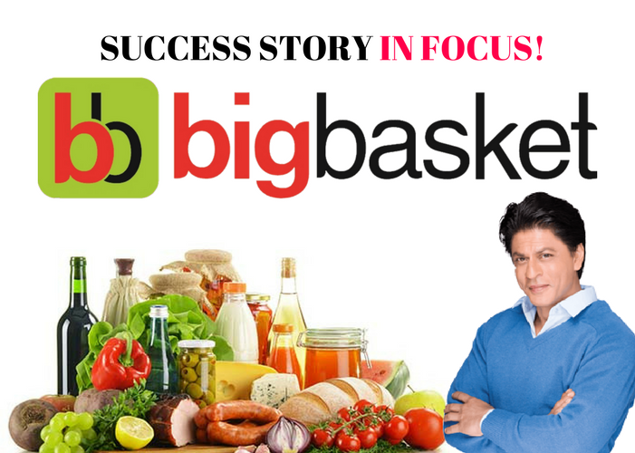

Big Basket
BigBasket (stylized as bigbasket) is an Indian online grocery and food products provider, founded in 2011. Headquartered in Bengaluru, the brand is run by Innovative Retail Concepts Private Limited in 30 Indian towns and cities. BigBasket sells fresh fruits and vegetables, grocery and staples, beverages, dairy and egg, meat, branded foods, personal care and household items via its website and mobile apps.[1][2][3][4][5] With its pan-India presence, and a customer base of 6 million, BigBasket is the country's largest online grocer.
History
In 1999, founders of BigBasket started Fabmart, one of the first online businesses in India. In 2001, they then started an online groceries business as a part of Fabmart. The founding members then went on to set up a physical retail chain called Fabmall which was a chain of grocery supermarkets in southern India. This business was sold in 2006, and eventually renamed More by the buyers, the Aditya Birla Group. The founders however were always keen on online grocery and in 2011, the same team regrouped and started BigBasket.
Partnerships
BigBasket partnered with state-owned Bengal Chemicals and Pharmaceuticals Limited (BCPL) to deliver its industrial chemicals, pharmaceuticals, and home products to its customers in Kolkata.[11][12] In April 2017, BigBasket partnered with SnapBizz, a retail technology firm to automate supply chain and inventory management for local grocery stores.
Founder
.jpg)
Hari Menon
Hari Menon is the co-founder and CEO of BigBasket, India’s largest online grocery shopping portal, and mobile app.
Before BigBasket, Hari worked in different capacities - as CEO of Indiaskills, a vocational educational joint venture between Manipal Group and City & Guilds, UK; and as a business head with Wipro.
He also launched one of the first e-commerce portals in India, Fabmart, in 1999, which served as a tech run of sorts for BigBasket. Today, BigBasket is the fifth largest grocer in the country after offline giants D-Mart, Reliance, Big Bazaar, and More.
Born and brought up in Mumbai, he now calls Bangalore home. He holds a bachelor’s degree from BITS, Pilani, and an MBA from Carnegie Mellon University.